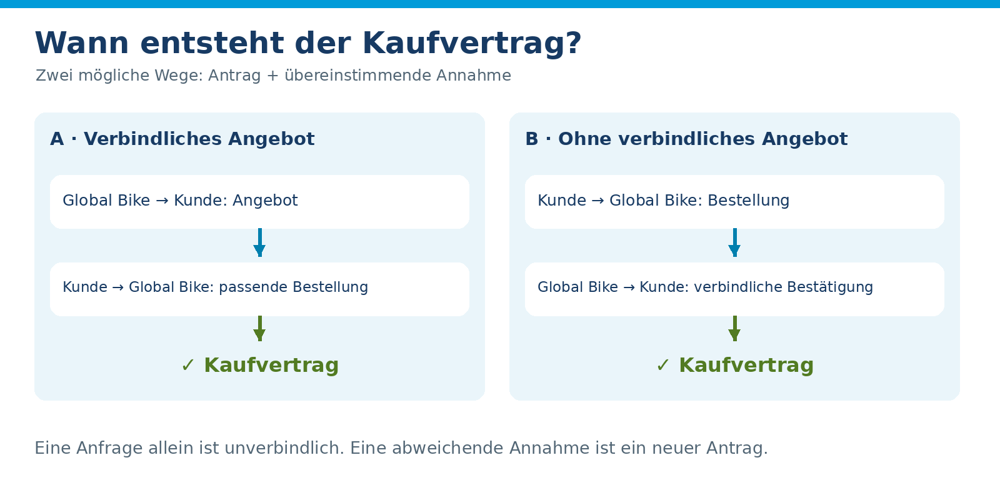
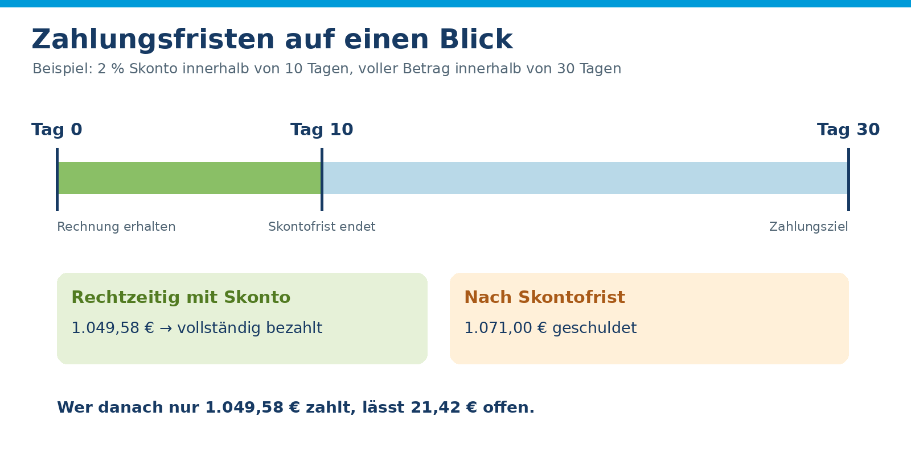
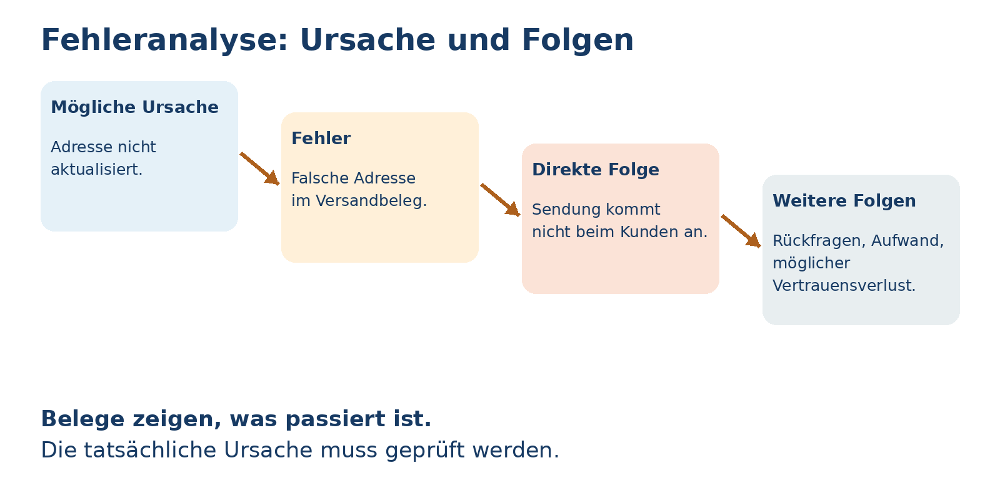

Zur MaterialübersichtVertriebsprozess und
kaufmännische Prüfung
M02.1 Vertriebsprozess und
Belege
 Sieben Schritte
Sieben Schritte
| Kundenanfrage |
Was möchte der Kunde? |
| Angebot |
Zu welchen Bedingungen kann geliefert werden? |
| Bestellung |
Was bestellt der Kunde? |
| Auftragsbestätigung |
Was bestätigt Global Bike? |
| Warenauslieferung |
Was wird geliefert? |
| Rechnungsstellung |
Was muss bezahlt werden? |
| Zahlungseingang |
Was wurde bezahlt? |
Merke: Der Belegfluss verbindet die Dokumente eines
Auftrags.
Vertiefungswissen
Verkauf, Lager und Rechnungswesen arbeiten zusammen. Die Warenauslieferung erfolgt über Hamburg. Belegnummern und Bezugnahmen helfen, einen Auftrag nachzuverfolgen.
M02.2 Vom Kundenwunsch
zum Kaufvertrag

Kaufvertrag
Ein Kaufvertrag entsteht durch zwei übereinstimmende
Willenserklärungen. Global Bike muss die vereinbarte Ware liefern und
der Kunde muss sie abnehmen und bezahlen.
Merke: Eine Anfrage allein ist noch kein
Kaufvertrag.
Vertiefungswissen
Ein freibleibendes Angebot ist nicht bindend. Eine veränderte Annahme gilt als neuer Antrag (§ 150 Abs. 2 BGB). Eine reine Eingangsbestätigung ist nicht zwingend eine Annahme. Grundlagen: §§ 145 ff., 433 BGB.
M02.3 Lieferung und
Rechnungsprüfung
 Warenauslieferung
Warenauslieferung
Bei der Kommissionierung wird die bestellte Ware zusammengestellt.
Der Warenausgang dokumentiert, dass die Ware das Lager verlässt.
 Belegprüfung
Belegprüfung
| Formell |
Sind notwendige Angaben vorhanden? |
| Sachlich |
Stimmen Mengen, Preise und Vereinbarungen? |
| Rechnerisch |
Sind Beträge richtig berechnet? |
Merke: Eine rechnerisch richtige Rechnung kann
sachlich falsch sein.
Vertiefungswissen
Lieferbedingungen regeln beispielsweise Liefertermin und Transportkosten. Frei Haus bedeutet hier, dass Global Bike die Transportkosten bis zum vereinbarten Lieferort trägt. Ein Lieferschein enthält typischerweise Empfänger, Artikel und Menge. Rechnungsangaben regelt § 14 Abs. 4 UStG. Teillieferungen sind anhand der Vereinbarung zu prüfen.
M02.4 Rabatt, Umsatzsteuer
und Skonto
 Berechnungsschema
Berechnungsschema
| Warenwert netto |
1.000,00 € |
| − 10 % Rabatt |
100,00 € |
| = Nettobetrag |
900,00 € |
| + 19 % Umsatzsteuer |
171,00 € |
| = Bruttobetrag |
1.071,00 € |
| − 2 % Skonto |
21,42 € |
| = Zahlbetrag |
1.049,58 € |
Merke: Rabatt wird hier vom Nettowarenwert,
Umsatzsteuer vom verminderten Nettobetrag und Skonto vom vereinbarten
Bruttobetrag berechnet.
Vertiefungswissen und Rechenhilfe
Prozentbetrag = Grundwert × Prozentsatz / 100. Nettobetrag aus Brutto bei 19 % Umsatzsteuer = Brutto / 1,19. Geldbeträge auf Cent runden.
M02.5 Zahlungseingang
und Fehleranalyse

Zahlungsfristen
Prüfen Sie, wer wann wie viel für welche Rechnung bezahlt hat. Im
Beispiel aus M02.4 ist bei rechtzeitigem Skonto der Zahlbetrag 1.049,58
€. Ohne Skontoberechtigung bleiben bei dieser Zahlung 21,42 € offen.

Fehleranalyse
Merke: Ein offener Posten ist eine noch nicht
vollständig ausgeglichene Forderung.
Vertiefungswissen
Restforderung = geschuldeter Betrag minus zugeordneter Zahlung. Offen bedeutet nicht automatisch überfällig. Fehler können Beschwerden, zusätzliche Arbeit und finanzielle Nachteile auslösen. Eine Fehlerkorrektur beseitigt einen bestehenden Fehler; Fehlervermeidung soll Wiederholungen verhindern. Berechtigtes Skonto verändert auch die Umsatzsteuerbemessungsgrundlage (§ 17 UStG).
Begriffe zum Fall
Ausgangsrechnung – Dokument, mit dem der Verkäufer die Ware oder Leistung abrechnet. RE-2603 enthält Nettobetrag, Steuer und Betrag, den VeloDOM zahlen soll.
Sachliche Rechnungsprüfung – Vergleich von Artikel, Menge, Preis und Bedingungen mit der tatsächlichen Leistung und Vereinbarung. Die Rechnungsmenge der Helme lässt sich mit der bestätigten Liefermenge abgleichen.
Text als Markdown herunterladen · Zur Materialübersicht
 Auftrag, Lieferschein, Rechnung und Zahlung abgleichen
Auftrag, Lieferschein, Rechnung und Zahlung abgleichen